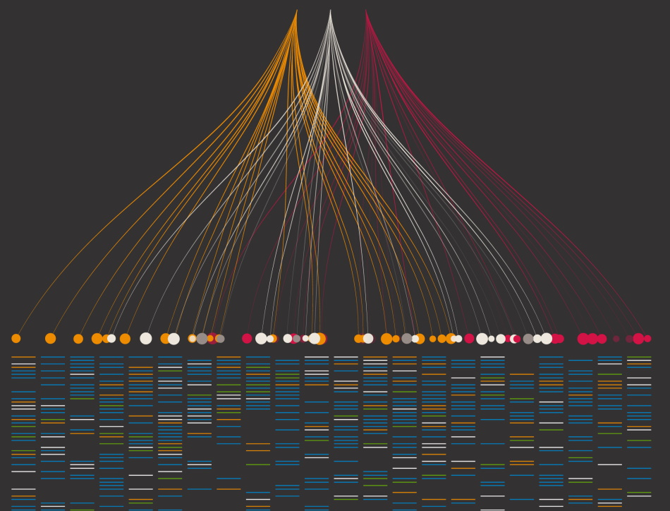
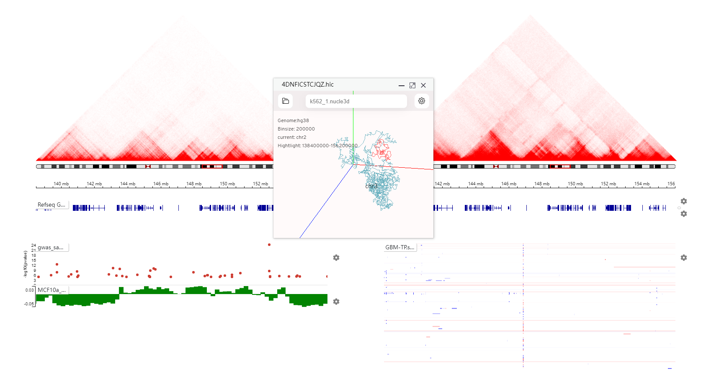
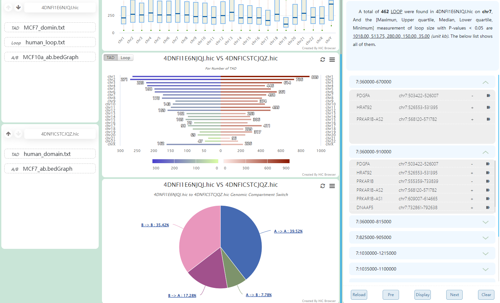

HiBrowser
Hi-C technology provides a promising way to construct high-quality pan-genomes and perform pan-genome comparative analysis, and extensive uses of Hi-C have greatly changed the vision of genome organization. It has revealed that three-dimensional (3D) organization of mammalian genome plays an essential role in gene regulation that promotes transcriptional regulation by folding and integrating regulatory activities in the same domain.
HiBrowser is an interactive and dynamic browser for synchronous Hi-C data visualization. HiBrowser provides an out-of-the-box web service and allows flexible and dynamic reconstruction of custom annotation tracks on demand during running. HiBrowser is able to superimpose two Hi-C heatmaps together and supports integrations of multi-omics data with Hi-C heatmap. In addition, it develops a clone mode to synchronously display the genome coordinate positions or the same regions of multiple samples associated with same or different reference genomes. HiBrowser offers an interactive and dynamic 3D chromatin structure display mode synchronized with Hi-C heatmap, and supports a precise search on correlation data of distal cis-regulatory elements and navigation to any region on Hi-C heatmap of interest according to the searching results.
HiBrowser is an interactive and dynamic browser for synchronous Hi-C data visualization. HiBrowser provides an out-of-the-box web service and allows flexible and dynamic reconstruction of custom annotation tracks on demand during running. HiBrowser is able to superimpose two Hi-C heatmaps together and supports integrations of multi-omics data with Hi-C heatmap. In addition, it develops a clone mode to synchronously display the genome coordinate positions or the same regions of multiple samples associated with same or different reference genomes. HiBrowser offers an interactive and dynamic 3D chromatin structure display mode synchronized with Hi-C heatmap, and supports a precise search on correlation data of distal cis-regulatory elements and navigation to any region on Hi-C heatmap of interest according to the searching results.

Heatmap superposition
Higher-order chromatin structure is often perturbed in cancer and other pathological states. Chromatin interaction analysis based on heatmap superposition could effectively reveal changes in small chromosome.

Panorama of multi-omics data
The CTCF appears indispensable in defining TAD boundaries and maintaining chromatin loop structures within these domains. Based on the analysis of panorama of multi-omics data, it could effectively reveal that acute depletion of CTCF leads to the reorganization of chromatin accessibility

Synchronously comparative analysis
Genome-wide association studies (GWAS) have identified hundreds of loci associated with various disease. Synchronously comparative analysis could straightforwardly provide supports to select obvious candidate genes and simplify their functional characterization.
Synchronously comparative analysis

Interactive 3D model simulation

Spatial structure analysis
